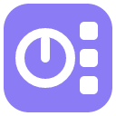
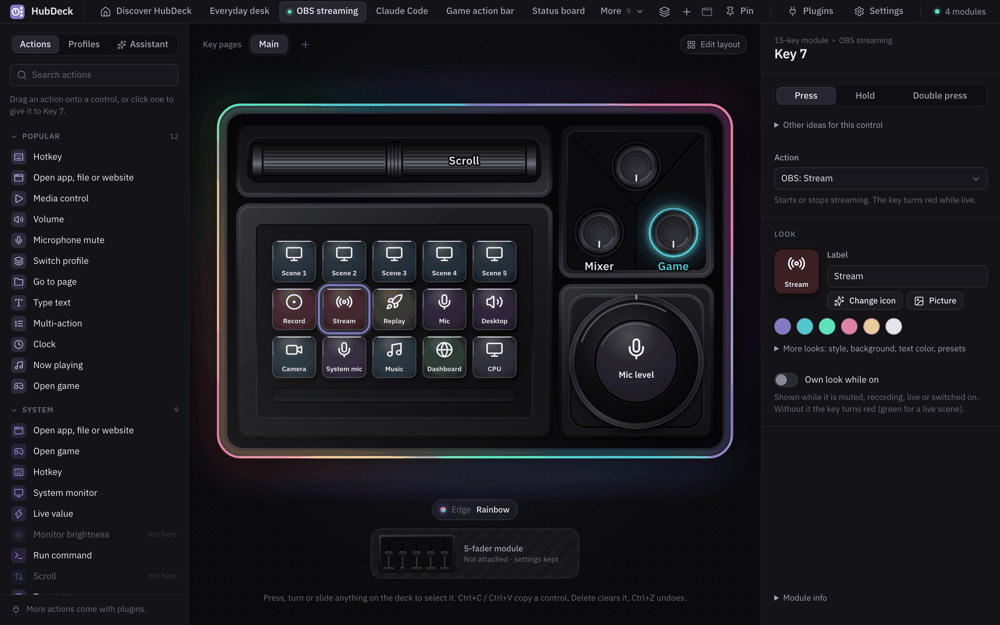
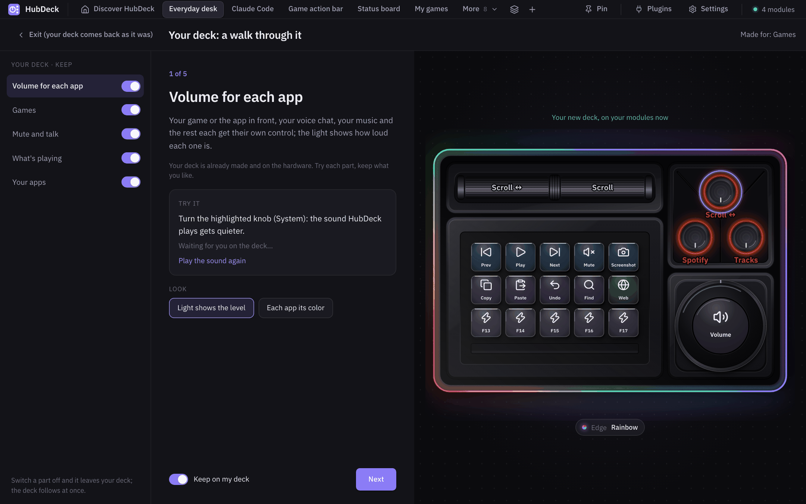

Every module, live
Keys, the round dial screen, knobs, faders, rollers and the edge light, found and placed as they sit on your base, while it runs.

HubDeckEvery key, screen, knob, fader and light of Cooler Master's modular deck, profiles that follow the app you are in, hundreds of Stream Deck plugins, and a tour that makes your deck in minutes.
Version 0.1 preview · no account, no cloud, no telemetry
Keys, the round dial screen, knobs, faders, rollers and the edge light, found and placed as they sit on your base, while it runs.
Your home profile, and an app's own profile takes over while it is in front. Pages, holds, double presses, modes.
Plugins made for Stream Deck run as they are: Discord, Spotify, OBS, Home Assistant, lights and more.
Your own tools can show their state (an agent waiting, a build running) and offer actions through a small HTTP contract.
One style for the whole deck, with reactions: a call, a muted mic, an agent that needs you.
About one percent of a core in the tray. No account, no cloud, no telemetry.
Say what you do most at the computer, and HubDeck makes a deck for your modules and your apps at once, then walks you through it on the real hardware: the control to try lights up, and you keep the parts you like. No AI needed. Want more? The assistant, running on your own Claude Code, builds on it, or go control by control through a gallery of ideas.

The USB protocol of every module was worked out and checked on real hardware, then the app was built around it with Claude Code. The code, the protocol and the story are public: take it, change it, extend it, with or without AI.